折叠细节
回忆上次
- 上- 这次我们讲的是折叠
- 这是vim6.0时候提供的功能
- 目的是把细节忽略
- 只显示文档的主干
- 折叠有很多options
foldlevel- 显示折叠层次foldcolumn- 折叠树宽度foldmethod- 折叠方式manual- 手动indent- 缩进
- 折叠的定义
zf2j- 当前行和下面两行建立折叠
zfa{- 用大括号(包含)建立折叠
zfi{- 用大括号(不包含)建立折叠
- 折叠的删除
zd
- 折叠的打开和关闭
zoopenzcclose:set foldlevel=1设置折叠层次
- 这个缩进折叠可以对于程序文件使用么？🤔

- 动手试试！
打开oeasy.java
- 设置和查看属性
- 折叠的options
foldmethod设置为- indent - 缩进
foldcolumn折叠树设置为- 4列
:set foldcolumn=4
foldlevel折叠层次- 设置为0 折叠整个class
- 设置为1 折叠各个函数
- 设置为2 全部打开
- 默认设置为99 全部打开
:set foldopen=all也可以直接打开所有折叠:set foldclose=all可以直接关闭所有折叠
- 但是这个东西有快捷键么？
zr和zm
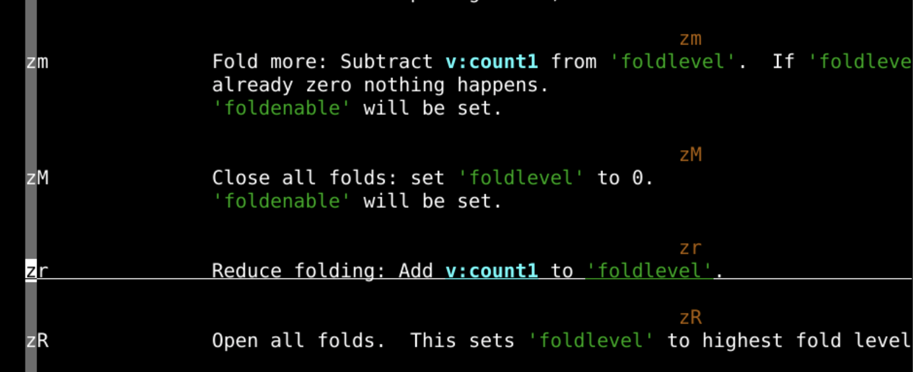
zrz是折叠r是reduce- 让折叠层次
fold level减1 zR所有的折叠都打开
- zm
z是折叠m是more- 让折叠层次
fold level加1 zM所有的折叠都关闭
- 和
zo、zc区别zo、zc仅对当前行起作用zr、zm对所有文字起作用
- 如果我想对于某些
{range}起作用，可以么？
foldopen、foldclose命令
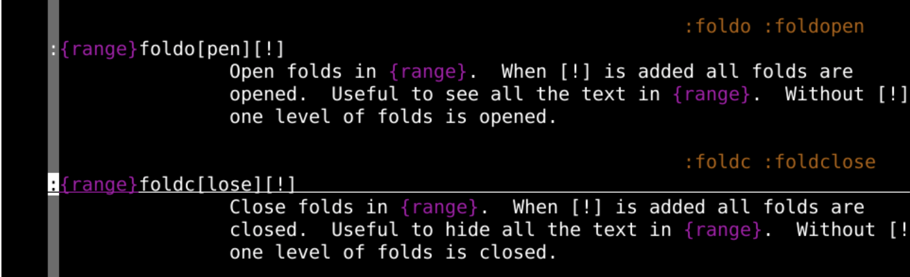
- 加上！的目的是彻底递归地折叠所有，能折到哪里折到哪里
:.foldopen- 当前行打开折叠
zo
- 当前行打开折叠
:%foldclose- 所有都关闭折叠
zc
- 所有都关闭折叠
:1,15foldopen- 1,15行都折叠
zc
- 1,15行都折叠
:33,Gfoldclose!- 33到最后一行彻底折叠
zC
- 33到最后一行彻底折叠
更多折叠方法
- 我们可以
h foldmethod来观察一下
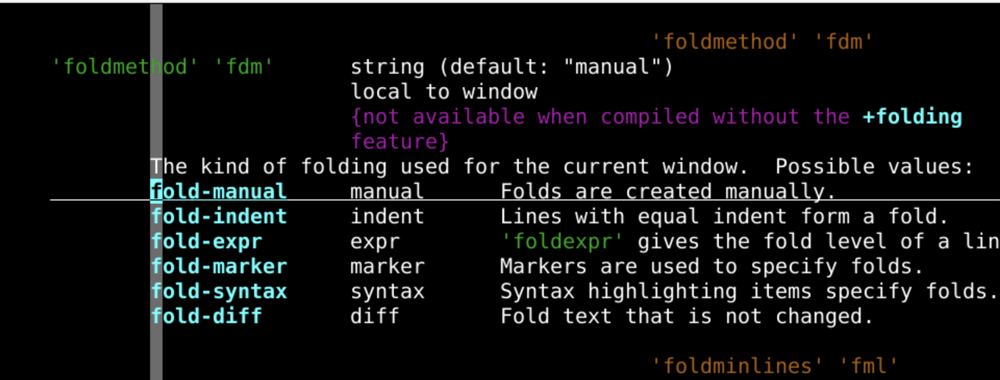
- 折叠的模式总共有6种
- 手动 -
manual - 缩进 -
indent - 表达式 -
expr - 标记 -
marker - 语法 -
syntax - 差异 -
diff
- 手动 -
- 这里面就是
indent最好用 - 帮助手册中的超链接
- 用ctrl+]跳入
- 用ctrl+o跳入
表达式折叠
- 首先设置折叠方法为表达式
:set foldmethod=expr
- 显示出空出来的缩进究竟是tab还是空格
:set listchars=eol:$,tab:>-,space:_
- 然后设置各种表达式
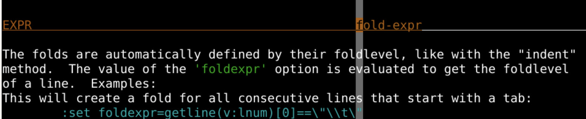
设置
:set foldexpr=getline(v:lnum)[0]== \"\\t\"- 只要这一行的第0个元素是
"\t" - 但注意双引号和反斜杠都需要转义
- 也就是tab键
- 那么这行就进入折叠范围
- 只要这一行的第0个元素是
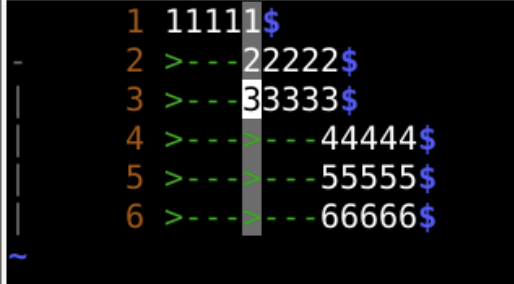
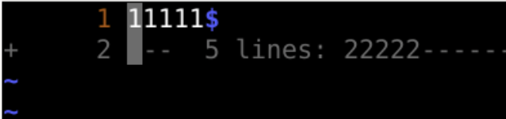
空行作为表达式
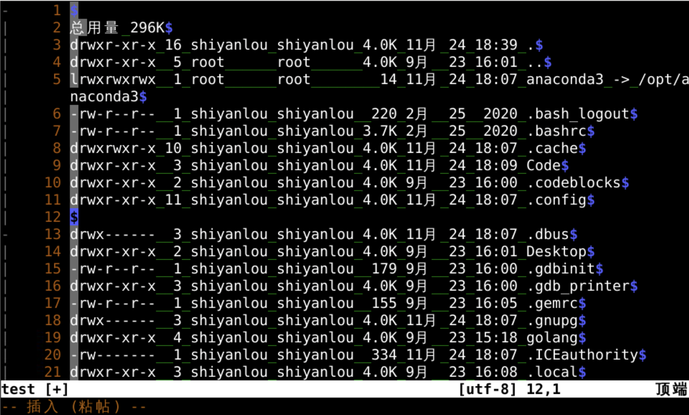
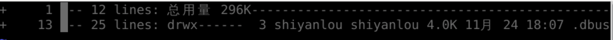
- 下面这两条差不多
:set foldexpr=getline(v:lnum)=~'^\\s*$'&&getline(v:lnum+1)=~'\\S'?'<1':1:set foldexpr=getline(v:lnum-1)=~'^\\s*$'&&getline(v:lnum)=~'\\S'?'>1':1
- 都可以把把空行分割开的段落都折叠起来
- 后面的是一个表达式
- 上一行不是空行并且上一行有非空字符那表达式就是1
关于表达式的计算
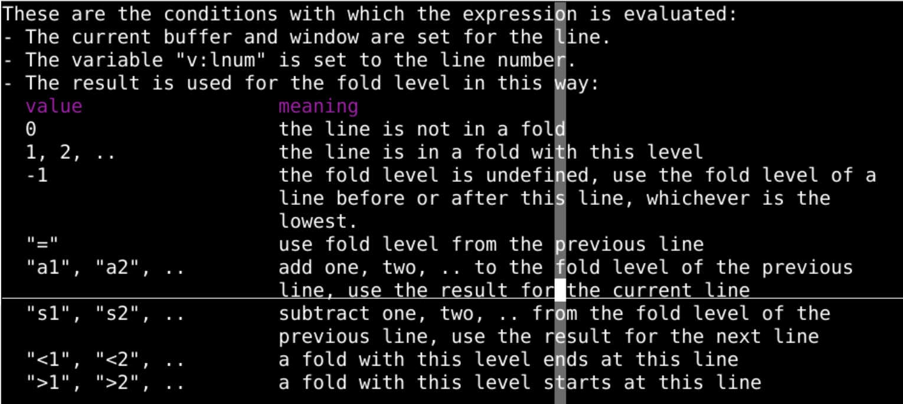
:set foldexpr=getline(v:lnum-1)=~'^\\s*$'&&getline(v:lnum)=~'\\S'?'>1':1:set foldexpr=后面的是一个表达式- 上一行不是空行并且上一行有非空字符那表达式就是1
- 这个1就是折叠的层次
语法缩进
- 这个比较复杂
- 要设置具体的缩进规则的语法文件
- 但是一旦设置好了之后
- 就一劳永逸了
- 一般常用的语言都有现成的syntax.vim
- 但是我们也可以自己尝试
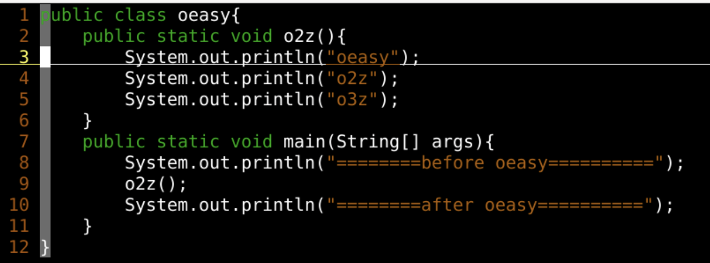
设置语法折叠
:syn sync fromstart:set foldmethod=syntax:syn region myFold start="{" end="}" transparent fold- 由于这个类有两层大括号
- 所以被分成了两级折叠
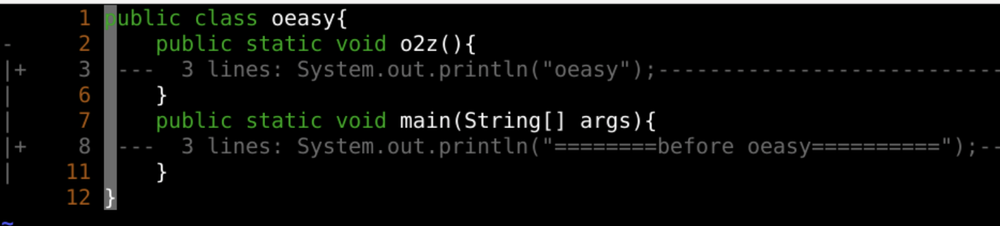
- foldnestmax可以控制最大层数
标记折叠
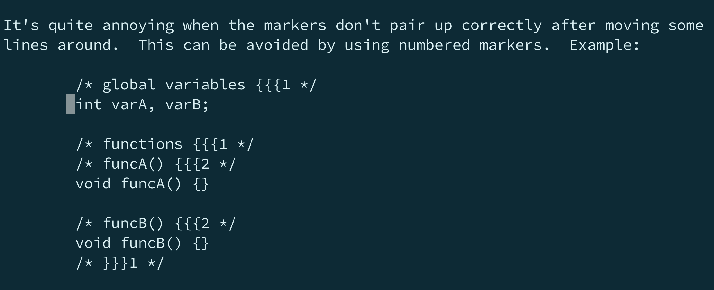
- 这个设置方式直接在源文件里面用注释的方式做标记
- 优点是特别明确
- 为了更明确可以写清楚折叠的层次
- 这样就避免折叠的不封闭
- 缺点是不易修改
- 而且在源文件里面放那么多不相关的内容
- 增大存储、传输、理解的压力
例子
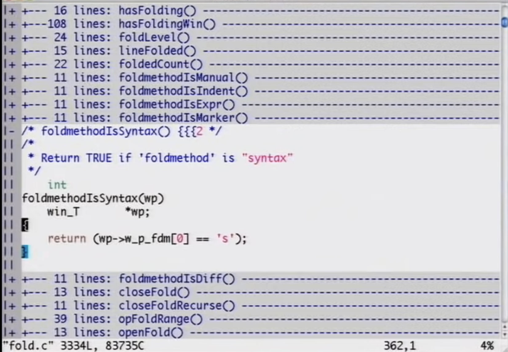
- 这里设置的折叠方法是syntax
diff折叠
- 主要作用是找到两个文件中不同的部分
- 相同的部分就给他折叠了
- 这个也是vimdiff主要的foldmethod
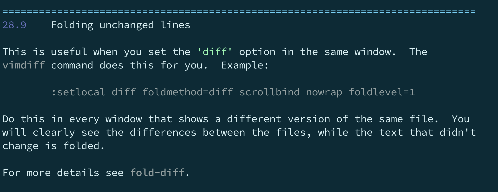
- 这么多到底用哪个？
- indent！就很好
- 很多语言缩进就是层次
- 缩进就代表逻辑
总结
- 折叠方式很多
- 我们一般就用默认的就行
- indent也很好用
- 前提是缩进语法严格到位
- 打开关闭
zc、zo是打开关闭当前行zm、zr可以改变foldlevel
- 配合
{range}:{range}foldopen!可以在范围内打开行:{range}foldclose!可以在范围内关闭行
- 但是这个折叠
- 一关闭vim就没了
- 这个折叠状态可以保存住么？🤔
- 下次再说！